Redesigning an EdTech Mobile App: From ~5K to ~712K Certificates in One Year
Rumah Siap Kerja's app was confusing users at every step. I rebuilt the information architecture, simplified every core flow, and built a component system, helping the platform scale from ~8K to ~574K+ customers in one year.
Overview
The Short Version
Rumah Siap Kerja (RSK) is an Indonesian edtech platform partnered with Kartu Prakerja, a government program that gives citizens vouchers to take online job-skills courses. When I joined, the platform had around 8K+ users with about ~5K+ redemptions and ~4K+ certificates. Almost all of these users came through Kartu Prakerja, and the program was about to scale up significantly.
Through user interviews, support ticket analysis, and usability audits, I found that users were motivated to learn but the app was cluttered and confusing. The payment flow had unclear action buttons, the homepage was overloaded with banners, and the dashboard buried the things users needed most.
I restructured the information architecture, simplified every core flow, and built a component system to keep the experience consistent. From 2020 to 2021, total customers grew to ~574K+, total redemptions reached ~459K+, and total certificates issued grew to ~712K+.
Context
Context
What is Rumah Siap Kerja?
RSK is an online learning platform where Indonesian citizens can take video courses on topics like business, marketing, IT, and agriculture. Most of its users are fresh graduates or workers looking to pick up new job skills. Almost all users pay using Kartu Prakerja vouchers from the government. The payment process involves entering a redemption code that users purchase from a third-party marketplace (like Tokopedia or Bukalapak). This is not a standard checkout, and the existing flow at the time made it even more confusing than it needed to be.
Why this project mattered
The Kartu Prakerja program was growing fast, and RSK needed to keep up. The platform had around 8K+ users when I joined, with ~5K+ redemptions and ~4K+ certificates. While conversion was not terrible, RSK was about to receive a lot more traffic as the government scaled up enrollment. Since almost all users came through Kartu Prakerja, the voucher purchase and learning flow needed to be smooth enough to handle that growth. If users found the experience confusing, they would just go to a competing platform.
My role
I was the lead and sole UX designer. I managed two design interns and worked with PMs, engineers, marketing, and C-level stakeholders. I owned the full process: research, IA restructuring, interaction design, prototyping, usability testing, and design iteration. The intensive redesign work took about one month.
Research
Discovery: Understanding What Was Going Wrong
I started with two parallel research tracks: reviewing customer service ticket data to find patterns, and conducting phone interviews with both active users (who had bought classes) and inactive users (who registered but never purchased anything).
Customer service tickets showed the most common complaints: payment confusion, difficulty finding classes after purchasing, and not knowing where to download certificates.
Phone interviews helped me understand why these problems were happening. Most of RSK's users had low digital literacy. Many had never used an e-learning app before. The app was not necessarily designed for advanced users. It was just cluttered and confusing, with too much going on and not enough clear direction for what to do next.
I do not have exact drop-off numbers for each step, but the patterns from the tickets and interviews were consistent enough to identify four clear friction points:
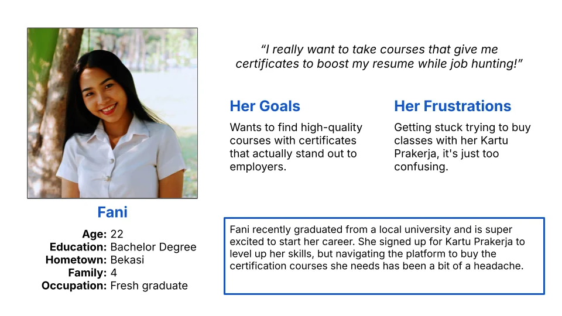
Building the persona
From these findings, I created a primary persona: Fani, a 25-year-old recent graduate from Bekasi looking for her first job. She registered for Kartu Prakerja to take certification courses but found the voucher process confusing. She represents the typical RSK user: motivated to learn, but not experienced with digital products, and quick to give up when something feels unclear.
I used this persona as the main filter for every design decision going forward. If Fani would not understand something on her first try, it needed to be simpler.
Analysis
UX Audit: Mapping the Specific Issues
Before designing solutions, I ran a heuristic evaluation using Shneiderman's 8 Golden Rules. Two rules were especially relevant here: "Strive for Consistency" and "Reduce Short-Term Memory Load." These focus on making interfaces predictable and reducing how much users need to remember, which are the most important things when designing for users with low digital literacy.
The audit showed several issues across the app:
- Buttons and interactions behaved differently on different screens
- The homepage was overloaded with promotional banners, sliders, and marketing content that competed with the actual navigation
- Getting from "I want to take a class" to actually enrolling took too many steps through confusing menus
- Users completed actions (like buying a class) without getting clear confirmation, so they were not sure if it worked
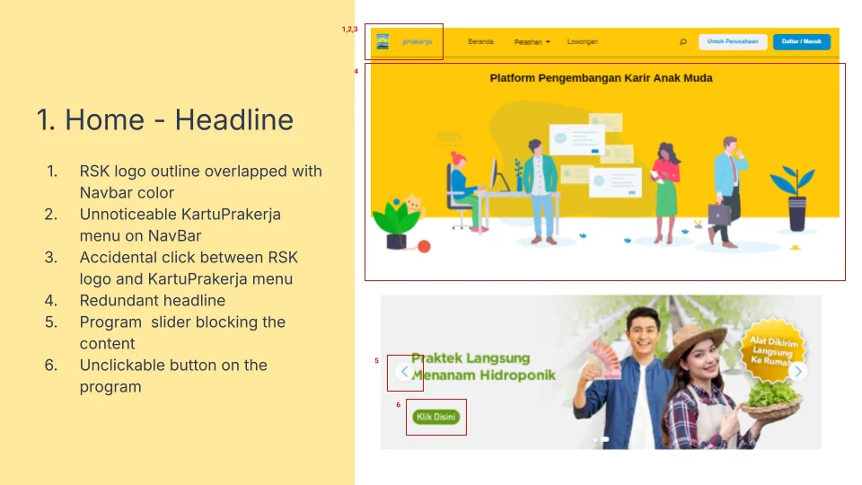
I also studied competitors like Ruangguru (Indonesia's largest edtech) and Udacity. Two things stood out that RSK was missing. First, successful edtech apps kept each screen focused on one decision instead of showing a bunch of options at once. Second, they used progress bars, completion badges, and grade displays to keep users engaged throughout multi-session learning.
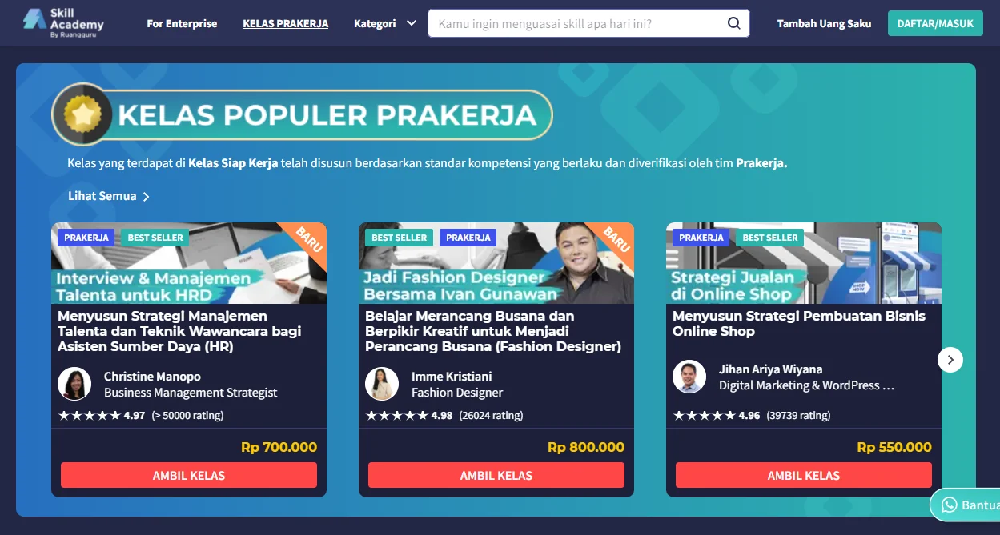
Strategy
The Strategic Decision: Structural Redesign Over Quick Fixes
At this point the project could have gone two ways.
I pushed for Option B. The patterns from my research showed that users were not just failing at one step. Registration, payment, class discovery, learning, and certification all had problems. The app had grown organically without a clear structure, and it showed. Fixing individual screens would not solve that.
My goal was to reduce every core flow to as few steps as possible. Sign up, find a class, buy it, start learning, get your certificate. If any of these flows felt long or complicated, the information architecture needed to change.
The disagreement about banners
This is where I ran into pushback. The C-level and marketing team believed that having a lot of promotional banners and featured content on the homepage would lead to more sales. More visibility, more conversions, was the thinking.
I disagreed. I argued that all these banners and promotions were actually driving users away because they were overwhelmed. The customer service data backed this up. Users were coming to the app with a clear goal (find a class, buy it) and the homepage was making that harder, not easier. The clutter was not helping sales. It was hurting them.
After showing the evidence from the research and ticket data, I got buy-in for a cleaner homepage. Promotional content would still exist but would not compete with the core navigation. We agreed to measure the impact after launch.
Architecture
Information Architecture: Rebuilding the Structure
The old IA spread primary actions across multiple layers. Courses, categories, settings, transactions, and support were scattered across navigation that had grown without a clear plan.
I rebuilt the IA around three user goals:
- Find classes: Home + Catalog
- Learn: Class player + content
- Track progress: Dashboard with classes, grades, and certificates
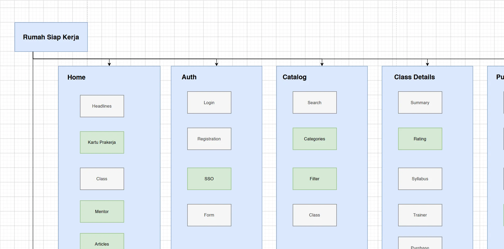
Everything else (profile settings, transaction history, help center) went into secondary navigation through a side menu. The bottom tab bar was only for the three primary goals.
I considered making "Payment" a fourth main section but decided against it. Payment is not a goal on its own. It is a step within buying a class. Making it a separate destination would have made the purchase flow feel more complicated, not less. Payment needed to feel like a natural next step after selecting a class.
Design
Design Solutions: Connected to Research Findings
Each design change came directly from something I found in research.
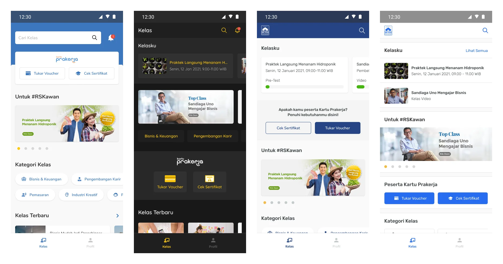
Registration: fewer fields + social sign-in
Users abandoned registration because it felt too long. I removed non-essential fields and added Google sign-in as the primary option so users could register with one tap. Manual registration kept only four fields: name, email, phone, password. Since Kartu Prakerja required the registered name to match government records, I added clear helper text explaining this upfront instead of letting users fail later at payment.
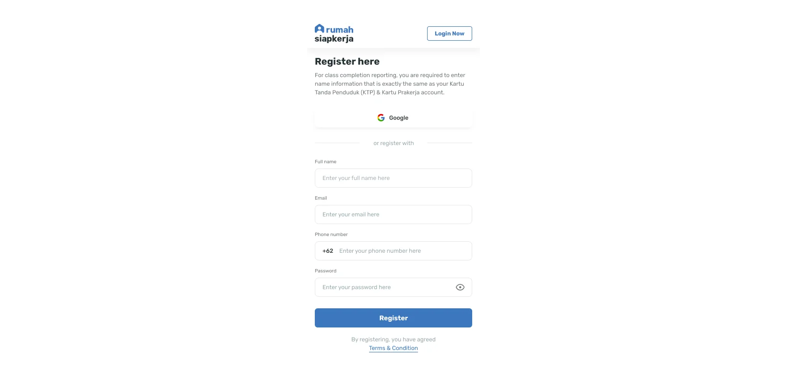
Catalog and search: category chips + unified search
Users could not find relevant classes in the existing layout. I replaced the cluttered homepage grid with a clean catalog using category filter chips (Business & Finance, IT, Marketing, etc.) and a search that showed both individual classes and categories. I added sort options (highest rating, newest, price) so users could narrow results quickly.
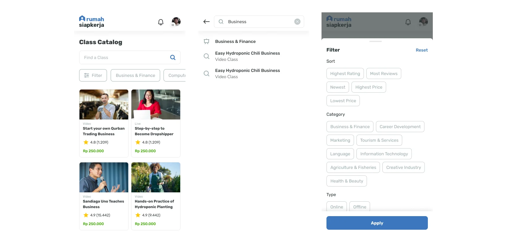
Class details: sticky buy button + clear syllabus
Users were not sure what a class included before buying. I redesigned the class detail page with a purchase button that stayed visible at the bottom of the screen, learning outcomes shown near the top ("What did you get from this class?"), and an expandable syllabus with module names and durations. Users could see exactly what they would get before they committed.
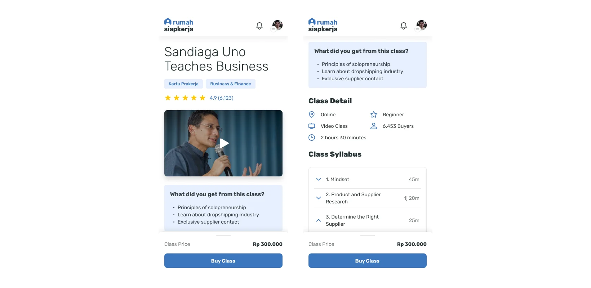
Payment: default to Kartu Prakerja + simplified flow
Payment was the biggest source of confusion. Since almost all users paid with Kartu Prakerja, I made it the default payment method. I simplified the redemption code flow by removing the confusing action buttons and replacing them with a clear, single-step input for the voucher code with short explanation text on the screen. Other payment methods like bank transfer were available through a "Change Method" button but did not compete for attention.
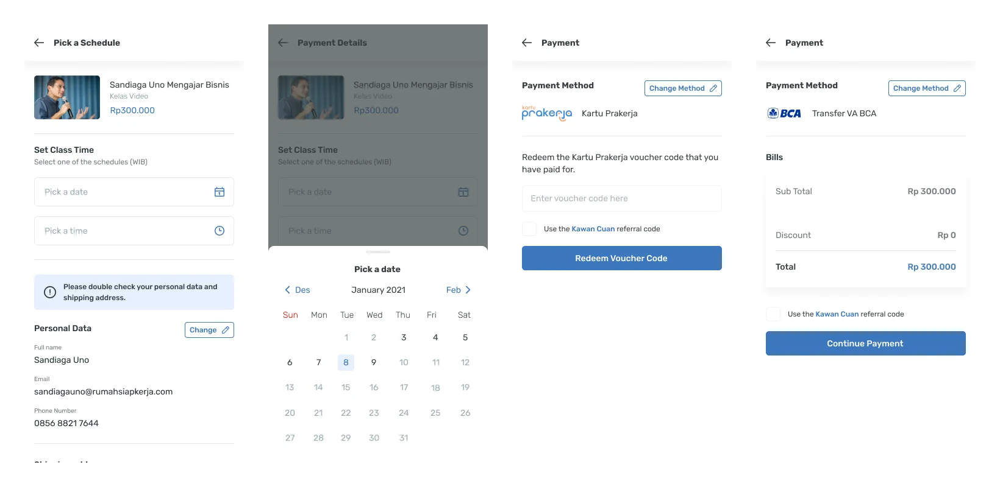
Dashboard: My Class tab
Users could not find their purchased classes or certificates. I made "My Class" the default dashboard tab with search and sort. Certificates were accessible right from the completed class card instead of being in a separate section. I also added a grade chart showing test scores against the passing threshold so users could see how they were doing at a glance.
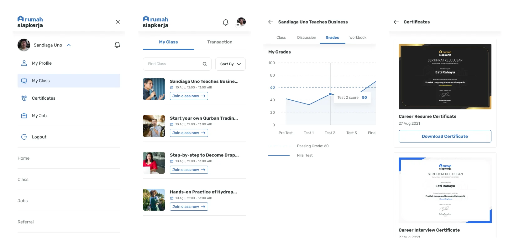
Learning experience: playlist structure + quizzes
Flat lesson lists gave users no sense of progress. I restructured course content into a playlist-style player with collapsible modules, time durations, and clear indicators for completed and current lessons. Quizzes between modules gave immediate feedback (showing the correct answer and explanation) to keep users engaged. I also added a workbook/essay section for hands-on practice.
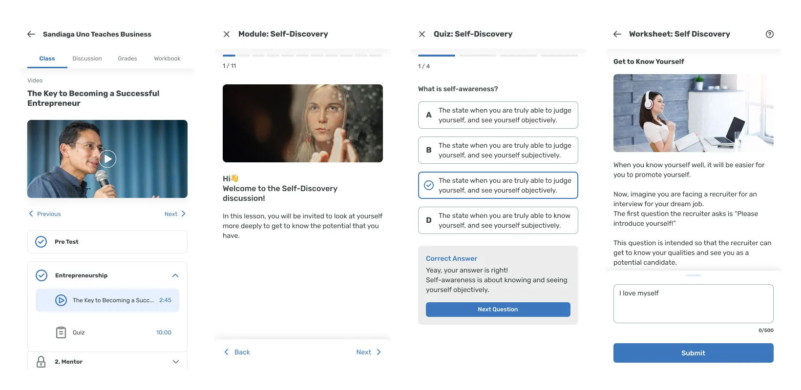
Help center: in-app Kartu Prakerja guide
Customer support was overwhelmed with Kartu Prakerja questions. I built an in-app help center with step-by-step visual guides for common questions like how to register for Kartu Prakerja and how to redeem vouchers. This reduced support tickets because customer service could now redirect users to the help center instead of answering the same questions repeatedly. It also helped prevent the payment confusion that was causing drop-off in the first place.
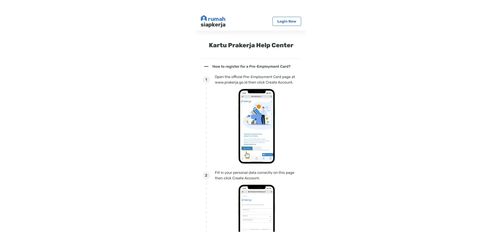
Usability Testing
Testing and Iteration
I ran two rounds of remote usability testing through Maze with users who matched our persona profile: first-time digital learners.
Round 1 results:
| Scenario | Completion Rate |
|---|---|
| Create an RSK account | 100% (5/5) |
| Find a specific class ("Menanam Hidroponik") | 80% (4/5) |
| Buy a class using Kartu Prakerja | 80% (4/5) |
| Enter the class and start learning | 80% (4/5) |
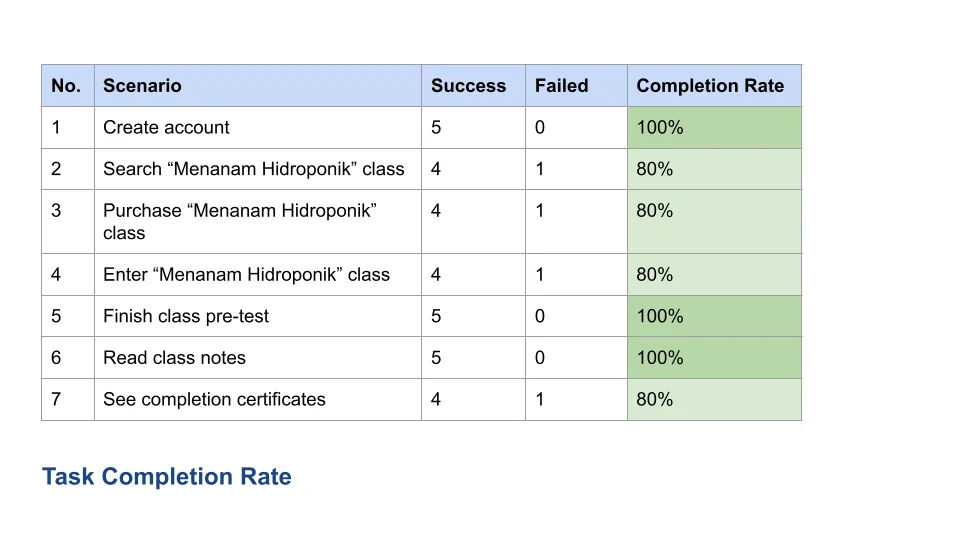
Three issues came up:
- Users could not tell which classes were Kartu Prakerja-eligible just from the catalog view. They had to tap into each class to check.
- During payment, users still struggled to find where to get their redemption code since it had to be purchased from an external marketplace (Tokopedia, Bukalapak, etc.), and there was no guidance pointing them there.
- Certificates were findable but users expected to see them directly on the dashboard without extra navigation.
What I changed after Round 1
- Added a visible "Prakerja" badge on eligible course cards in the catalog so users could spot them without opening each class.
- Added Active/Completed filter tabs to the dashboard so completed classes (with certificate downloads) were immediately accessible.
- Added direct links to the marketplaces (Tokopedia, Bukalapak, etc.) on the payment screen so users could easily go buy the redemption code and come back to enter it.
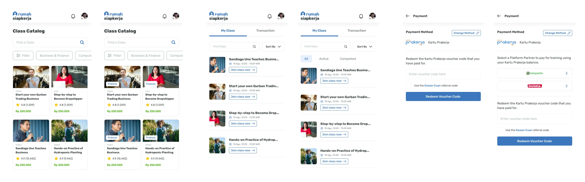
Round 2 testing confirmed these fixes worked. All scenarios reached 100% completion.
Results
Impact
Note: some classes issued multiple certificates, which is why the certificate count is higher than redemptions.
I want to be upfront about something. These numbers reflect both the redesign and the broader growth of the Kartu Prakerja program during this period. The government was enrolling many more citizens, so RSK was receiving a lot more traffic regardless.
My contribution was making sure the product could handle that growth. When tens of thousands of new users arrived each month, they needed to be able to find, buy, and complete courses without getting confused and giving up. The redesign removed the friction that would have turned that incoming traffic into lost users.
System
Design System Contribution
While not the main focus of this project, I built foundational design patterns that became the standard for RSK's product going forward:
- Component library in FigmaReusable components for buttons, form fields, cards, navigation, and modals. Each component included all states (default, hover, active, disabled, error) to keep things consistent across screens.
- Color and typography tokensA systematic palette with primary blue, semantic colors (green for success, red for errors, yellow for warnings), and a clear type scale for headings, body text, captions, and labels.
- Spacing and layout patternsConsistent 8px grid, standardized card sizes, and predictable padding to keep the visual design clean.
- Documented interaction patternsPatterns for bottom-sheet modals, filter chips, tab navigation, and persistent action buttons, so future screens could be built consistently even without my direct involvement.
This mattered because I was managing two interns. With documented patterns, they could build screens that matched the design language without needing me to review every detail. It also made the engineering handoff smoother since developers could reference the component library instead of guessing from individual screen mockups.
Team
Mentorship
As the sole designer managing two interns, I set up their work so they could learn while contributing:
- I gave them ownership of specific screens within the design system so they were doing real work, not just exercises.
- I ran regular critique sessions where I explained my reasoning on the screens I designed, including what I considered and rejected.
- We used the persona as our shared quality bar. "Would Fani understand this?" became how we evaluated every screen.
This was my first time managing other designers, and it taught me a lot about scaling design quality beyond just my own output.
Reflection
Reflection
What went well
- Aiming to reduce every flow to as few steps as possible kept decisions focused. Whenever someone suggested adding a feature or an extra screen, we could check whether it was really necessary.
- Building a persona from real interviews gave the whole team a shared reference point. Instead of debating opinions, we could ask "what would Fani do?"
- Defaulting payment to Kartu Prakerja and later adding marketplace links to help users find their redemption codes were decisions that came directly from testing. They show how iteration based on real user feedback can solve problems that the initial design missed.
What I would do differently
- Set up analytics tracking from day oneWe launched without proper event tracking, so the impact numbers are platform-level totals rather than funnel-specific data. If I could redo this, I would track every step of every core flow so we could see exactly where the redesign helped most.
- Test with a wider range of users earlierOur test participants were mostly urban smartphone users. RSK's real user base included people in rural areas with older phones and slower internet. Testing with them earlier would have caught performance and layout issues sooner.
- Build a more complete design systemThe component library worked for this project, but it was not documented well enough to scale to a bigger team. With more time, I would have added usage guidelines, do/don't examples, and accessibility notes for each component.
Process